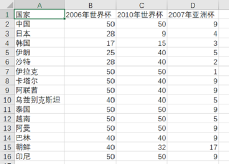
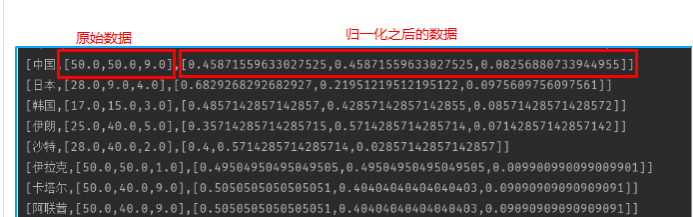
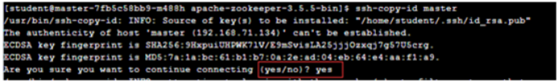
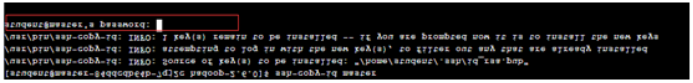
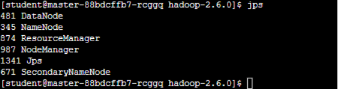
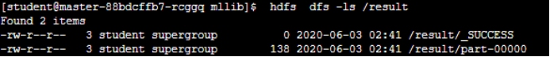
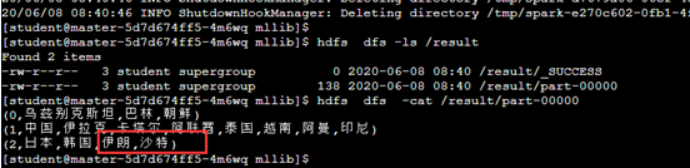

Spark MLlib 应用：聚类K-means 算法评估足球比赛
实验简介
本次实验将以聚类分析这个典型的机器学习问题为基础，介绍如何使用 MLlib 提供的 K-means 算法对数据做聚类分析，还将通过分析源码加深对MLlib K-means 算法的实现原理和使用方法的理解。
实验目的
- 掌握Spark API的基本使用
- 掌握Normailzer正则化
- 掌握MLlib Kmeans聚类
实验内容
聚类属于无监督学习，相比于分类，聚类不依赖预定义的类和类标号的训练实例。在这里介绍一种常见的聚类算法——k均值和k中心点聚类，实验内容是：应用聚类方法试图解决一个在体育界的世纪难解之题——中国男足近几年在亚洲到底处于几流水平。
实验知识点
- Spark API的基本使用
- Normailzer正则化
- MLlib Kmeans聚类
实验环境
- 软件环境：
Hadoop 2.7分布式集群环境
Spark
Spark MLlib
- 开发环境、工具：
CentOS 7
IntelliJ IDEA
- 用户账号
账号：student
密码：stu123
实验过程
- 实验中使用的数据包括了亚洲15支男子足球队的2005年到2010年的世界级大赛的成绩，然后使用K-Means算法对球队进行聚类，将球队分为若干个级别，例如：将球队分为3个等级，看一下中国男子足球队属于哪一个等级。
使用Spark MLlib 的K-Means算法完成聚类，可分为以下3个步骤：
- 将数据进行归一化
- 随机选取K个元素作为K个簇的各自中心，并执行聚类
- 将聚类结果输出
- Spark 机器学习库简介
Spark 机器学习库提供了常用机器学习算法的实现，包括聚类，分类，回归，协同过滤，维度缩减等。使用 Spark 机器学习库来做机器学习工作，通常只需要在对原始数据进行处理后，直接调用相应的 API 就可以实现。但是要想选择合适的算法，高效准确地对数据进行分析，您可能还需要深入了解下算法原理，以及相应 Spark MLlib API 实现的参数的意义。
Spark 机器学习库从 1.2 版本以后被分为两个包，分别是：
2.1 spark.mllib
Spark MLlib 历史比较长了，1.0 以前的版本中已经包含了，提供的算法实现都是基于原始的 RDD，比较容易上手。如果有机器学习方面的经验，只需要熟悉下 MLlib 的 API 就可以开始数据分析工作。想要基于这个包提供的工具构建完整并且复杂的机器学习流水线是比较困难的。
2.2 spark.ml
Spark ML Pipeline 从 Spark1.2 版本开始，目前已经成为可用并且较为稳定的新的机器学习库。ML Pipeline 弥补了原始 MLlib 库的不足，向用户提供了一个基于 DataFrame 的机器学习工作流式 API 套件，使用 ML Pipeline API，可以很方便的把数据处理，特征转换，正则化，以及多个机器学习算法联合起来，构建一个单一完整的机器学习流水线。
从官方文档来看，Spark ML Pipeline 虽然是被推荐的机器学习方式，但是并不会在短期内替代原始的 MLlib 库，因为 MLlib 已经包含了丰富稳定的算法实现，并且部分 ML Pipeline 实现基于 MLlib。并不是所有的机器学习过程都需要被构建成一个流水线，有时候原始数据格式整齐且完整，而且使用单一的算法就能实现目标，采用最简单且容易理解的方式是正确的选择。
本实验基于 Spark 2，展示使用 MLlib API 进行聚类分析的过程。
Spark MLlib K-means 算法的实现在初始聚类点的选择上遵循一个基本原则: 初始聚类中心点相互之间的距离应该尽可能的远。基本步骤如下:
第一步，从数据集 X 中随机选择一个点作为第一个初始点。
第二步，计算数据集中所有点与最新选择的中心点的距离 D(x)。
第三步，选择下一个中心点，使得最大。
第四步， 重复 (二),(三) 步过程，直到 K 个初始点选择完成。
本实验的开发过程在本地完成，需要在本课程的“参考资料”界面，下载 “ Spark IntelliJ 本地开发环境搭建 ” 说明文档。
按照上面下载的 ”Spark IntelliJ 本地开发环境搭建“ 文档说明，在本地安装配置 JDK，SDK，IntelliJ 开发工具。
在自己电脑中的IDEA中新建一个Maven项目：sparkFootballKmeansDemo。
具体步骤请参考 “Spark IntelliJ 本地开发环境搭建”文档中的 6.2 工程创建 和 6.3 配置scala类的运行环境 部分，并对照 6.5 修改 pom.xml文件 部分的内容 ，将pom文件下
<dependencies> <dependency> <groupId>org.apache.spark</groupId> <artifactId>spark-core_2.11</artifactId> <version>2.3.3</version> </dependency> <dependency> <groupId>org.apache.spark</groupId> <artifactId>spark-streaming_2.11</artifactId> <version>2.3.3</version> <scope>provided</scope> </dependency> <dependency> <groupId>org.apache.spark</groupId> <artifactId>spark-sql_2.11</artifactId> <version>2.3.3</version> </dependency> <dependency> <groupId>org.apache.spark</groupId> <artifactId>spark-mllib_2.11</artifactId> <version>2.3.3</version> <scope>compile</scope> </dependency> <dependency> <groupId>com.huaban</groupId> <artifactId>jieba-analysis</artifactId> <version>1.0.2</version> </dependency> <dependency> <groupId>com.alibaba</groupId> <artifactId>fastjson</artifactId> <version>1.2.34</version> </dependency> </dependencies>数据准备及主函数创建
数据格式说明：数据是亚洲15只球队在2005年至2010年间大型国际赛事的成绩排名，包括两次世界杯和一次亚洲杯，已经做了预处理，如进入世界杯决赛阶段比赛的取其最终排名，没有进入决赛圈的，但是打入预选赛十强赛的赋值40，预选赛小组未出线的赋值50，亚洲杯前四名按顺序排名，进入八强的赋值5，进入十六强的赋值9，预选赛未出线的赋值17。

数据归一化
思路分析：数据归一化的目的是将数据压缩在0-1之间，便于分析。

具体步骤如下：
- 接收方法参数得到数据
- 使用dataframe数据格式进行数据格式化
- 分别对标签和特征进行统计计算
- 然后新建数据归一化对象Normalizer(),对数据进行归一化处理
- 返回归一化后的数据，供聚类模型使用
代码编写：创建FootballNormalization类，具体创建步骤请参考实验“Spark IntelliJ 本地开发环境搭建”文档的“ 6.6.1 创建scala类”部分。
FootballNormalization 完整代码如下：
xpackage comimport org.apache.spark.ml.feature.Normalizerimport org.apache.spark.ml.linalg.Vectorsimport org.apache.spark.ml.linalg.Vectorimport org.apache.spark.rdd.RDDimport org.apache.spark.sql.{DataFrame, SparkSession}class FootballNormalization{}object FootballNormalization { //接受数据进行归一化处理 def parseData(ds:RDD[String],sparkSession: SparkSession):DataFrame ={ val data = ds.map { line => val array=line.split(",") val id=array(0) (id,Vectors.dense(array.drop(1).map(_.toDouble))) } //将数据以dataframe格式处理 val dataFrame = sparkSession.createDataFrame(data).toDF("id", "features") //创建归一化对象，设置归一化对象的输入为特征，输出归一化化特征，以及归一范围 val normalizer = new Normalizer() .setInputCol("features") .setOutputCol("normFeatures") .setP(1.0) //对数据进行归一化处理 val l1NormData = normalizer.transform(dataFrame) println("Normalized using L^1 norm") l1NormData }}完成聚类分析
思路分析：完成聚类分析，需要3个步骤：
- 划分训练集和测试集
- 建立聚类模型
- 调用spark算法库KMeans.train方法进行聚类个数k值的选择和模型的训练
因此需要编写两个方法，wcss和trainModel，其中wcss来划分训练集和测试集，使用k交叉验证的方法迭代计算，得出k的最佳值，方便填充聚类模型聚类个数的参数；然后编写trainModel方法建立聚类模型，调用spark算法库KMeans.train方法，输入数据和相关参数训练模型分别进行聚类个数k值的选择和模型的训练，最后两个方法分别返回k值和训练完成的算法模型。
具体编写步骤：
创建FootballCluster类，具体创建步骤参考之前的步骤即可。
编写FootballCluster类的完整代码如下：
xxxxxxxxxxpackage comimport org.apache.spark.mllib.clustering.{KMeans, KMeansModel}import org.apache.spark.mllib.linalg.Vectorimport org.apache.spark.rdd.RDDclass FootballCluster{}object FootballCluster { def wcss(parsedData:RDD[Vector])={ /*划分训练集和测试集80/20*/ val scaled_data = parsedData.randomSplit(Array(0.8, 0.2), 12L) val data_train = scaled_data(0) val data_test = scaled_data(1) /* * 分别修改聚类的个数和迭代的次数，进行参数优化，得到最佳的结果 * 应用交叉验证来选择模型最优的类中心数目。这和监督学习的过程一样，需要将数据集 * 分割为训练集和测试集，然后在训练集上训练模型，在测试集上评估感兴趣的指标的性能。 * 用80/20划分得到训练集和测试集，并使用MLlib内置的WCSS进行评估 * */ val newsCosts = Seq(1, 2, 3, 4, 5, 6, 7, 8, 9, 10, 11, 12, 13, 14, 15).map { param => (param, KMeans.train(data_train, param, 50).computeCost(data_test)) } println("sina-news clustering cross-validation:") newsCosts.foreach { case (k, cost) => println(f"WCSS for K=$k id $cost%2.2f") } } def trainModel(parsedData:RDD[Vector],k:Int,maxIterations:Int):KMeansModel={ /*划分训练集和测试集80/20*/ val scaled_data = parsedData.randomSplit(Array(0.8, 0.2), 12L) val data_train = parsedData //scaled_data(0) val data_test = scaled_data(1) val initializationMode = "" //训练KMeans模型 val kmeansModel = KMeans.train(data_train, k, maxIterations) //聚类中心 val clusterCenters = kmeansModel.clusterCenters clusterCenters.foreach(u=>println(u)) kmeansModel }}读取数据和归一化并聚类
先进行思路分析，具体编写步骤见 ”7.代码编写“：先完成对数据的读取，在数据读取时分为本地读取和服务器端读取，数据格式化和归一化分别使用dataframe和Normalizer方法进行数据统一，再使用wcss划分训练集和测试集，使用k交叉验证的方法迭代计算，得出k的最佳值，然后调用trainModel方法建立聚类模型，输入数据和相关参数训练模型，最后输出和保存结果。
使用sparkSession下的textFile()方法读取文件数据，示例代码如下：
xxxxxxxxxx//初始化Spark上下文 //local: 所有计算都运行在一个线程当中，没有任何并行计算，通常我们在本机执行一些测试代码，或者练手，就用这种模式。 //local[K]: 指定使用几个线程来运行计算，比如local[3]就是运行3个worker线程。通常我们的cpu有几个core，就指定几个线程，最大化利用cpu的计算能力 //local[*]: 这种模式直接帮你按照cpu最多cores来设置线程数了。 val conf = new SparkConf().setMaster("local[3]").setAppName("football cluster") val sparkSession = SparkSession.builder().master("local[3]") .appName("football cluster") .config(conf) .getOrCreate() //读取文件，此读取文件的格式为服务器读取的方法 / var ds = sparkSession.sparkContext.textFile(args(0), 1) //此读取文件的格式为读取本地数据的方法 //var ds = sparkSession.sparkContext.textFile("file:///E:\\tmp\\spark\\data\\data.csv", 1) //读取文件的表头，并去除 val header = ds.first() ds = ds.filter(row => row != header)- 对数据进行归一化处理：Normalizer的作用范围是每一行，使每一个行向量的范数变换为一个单位范数。
进行[0,1]归化，调用FootballNormalization类下的parseData方法进行归一化，示例代码如下：
xxxxxxxxxx //对数据进行归一化处理 val l1NormData=FootballNormalization.parseData(ds,sparkSession) l1NormData.cache()- 执行 WCSS方法，使用k折交叉验证的方法选择最佳K值，示例代码如下：
xxxxxxxxxx//此方法为FootballCluster类下的方法FootballCluster.wcss(data1)- 调用训练模型，传入数据，将聚类个数设置为3，迭代50次，示例代码如下：
xxxxxxxxxx //调用训练模型的方法trainModel是FootballCluster类下的方法，后面介绍 val kmeansModel=FootballCluster.trainModel(data1,args(1).toInt,args(2).toInt)- 打印计算结果并保存到文件中，代码如下：
xxxxxxxxxx result.collect().foreach(println(_)) result.saveAsTextFile(args(3))- 代码编写：具体操作如下：在项目的com包中创建Driver类，创建过程参考前面的步骤，Driver类的完整代码如下：
xxxxxxxxxxpackage comimport org.apache.spark.ml.feature.Normalizerimport org.apache.spark.ml.linalg.Vectorimport org.apache.spark.sql.types.StructTypeimport org.apache.spark.mllib.linalg.Vectors.fromMLimport org.apache.spark.sql.{SQLContext, SparkSession}import org.apache.spark.{SparkConf, SparkContext} // 任何Spark程序都是SparkContext开始的，SparkContext的初始化需要一个SparkConf对象，SparkConf包含了Spark集群配置的各种参数。 //初始化后，就可以使用SparkContext对象所包含的各种方法来创建和操作RDD和共享变量。object Driver { def main(args: Array[String]): Unit = { //初始化Spark上下文 //local: 所有计算都运行在一个线程当中，没有任何并行计算，通常我们在本机执行一些测试代码，或者练手，就用这种模式。 //local[K]: 指定使用几个线程来运行计算，比如local[3]就是运行3个worker线程。通常我们的cpu有几个core，就指定几个线程，最大化利用cpu的计算能力 //local[*]: 这种模式直接帮你按照cpu最多cores来设置线程数了。 val conf = new SparkConf().setMaster("local[3]").setAppName("football cluster") val sparkSession = SparkSession.builder().master("local[3]") .appName("football cluster") .config(conf) .getOrCreate() //读取文件 var ds = sparkSession.sparkContext.textFile(args(0), 1)// var ds = sparkSession.sparkContext.textFile("file:///E:\\tmp\\spark\\data\\data.csv", 1) //读取文件的表头，并去除 val header = ds.first() ds = ds.filter(row => row != header) //对数据进行归一化处理 val l1NormData=FootballNormalization.parseData(ds,sparkSession) l1NormData.cache() //normFeatures:进行L1归一化 //features:没有进行归一化 val data1=l1NormData.rdd.map{r=> fromML( r.getAs[Vector]("features").toDense) } //执行WCSS，选择最佳K值 FootballCluster.wcss(data1) //调用训练模型，传入数据，将聚类个数设置为3，迭代50次 val kmeansModel=FootballCluster.trainModel(data1,args(1).toInt,args(2).toInt) //normFeatures：进行L1归一化；features：没有进行归一化 val data2=l1NormData.rdd.map{r=> (r.getAs[String]("id"),fromML( r.getAs[Vector]("features").toDense)) } //使用聚类模型测试模型效果，并保存结果，lable即聚类标签 val result = data2.map { line => val id=line._1 val lable=kmeansModel.predict(line._2) (lable,id) }.reduceByKey((v1,v2)=>v1+","+v2) //打印聚类结果。保存到文件中result.collect().foreach(println(_))//服务器输出格式result.saveAsTextFile(args(3))//本地输出格式// result.saveAsTextFile("file:///E:\\tmp\\spark\\results") }}程序开发完成，接下来需要上传至服务器运行，需要进入实验环境中。
实验环境准备
进入终端，打开终端连接。
修改host文件
获取IP地址，使用指令查看服务器的IP地址：ip addr。

修改host文件，通过指令修改hosts配置文件：sudo vi /etc/hosts，可以通过查看详情获得用户密码，复制粘贴到命令行即可。注意：IP是上一步获取的IP，master是固定的，不需要更改。按i键进入编辑模式，修改文件的内容，具体如下：192.168.20.218 master。文件编辑完成后，按ECS键，输入:wq保存文件。
启动集群
配置ssh免密登录，配置ssh免密登录，具体指令如下所示：ssh-copy-id master，命令执行过程中选择yes选项，命令执行过程中需要输入master服务器student用户密码。


启动Hadoop集群：
xxxxxxxxxxcd $HADOOP_HOME/sbin/start-all.sh查看集群启动情况，在集群的各个节点上使用jps命令查看进程，例如：在master节点上：jps。

对程序进行工程打包与jar包上传
在本地开发工具里运行一次程序，选中Drive类运行，具体步骤请参考 “Spark IntelliJ 本地开发环境搭建”文档中的 “6.7.2 运行”，本地运行会报错，忽略这些错误，本地运行的主要目的是编译，为下一步打包做准备。
对程序进行打包，具体步骤请参考 “Spark IntelliJ 本地开发环境搭建”文档中的 “6.8.1 Maven生jar包方法”。
将生产的jar包上传至服务器指定路径 /home/spark-2.4.0-bin-2.6.0-cdh5.7.0，上传步骤请参考 “Spark IntelliJ 本地开发环境搭建”文档中的 ”6.8.3 将程序文件上传至服务器“。
上传数据集，将实验环境附件中的数据集data.csv先下载到本地，步骤如下：点进“附件”按钮，找到对应的附件下载即可，下载完成后，再次点击该按钮可回到实验手册界面。将下载的数据文件上传至服务器指定路径 /home/spark-2.4.0-bin-2.6.0-cdh5.7.0/data/mllib。
在实验环境中输入如下命令，将数据集放到hdfs指定路径下：
xxxxxxxxxxcd /home/spark-2.4.0-bin-2.6.0-cdh5.7.0/data/mllib hdfs dfs -put data.csv hdfs://master:8020/在服务器执行以下命令运行程序
xxxxxxxxxx/home/spark-2.4.0-bin-2.6.0-cdh5.7.0/bin/spark-submit \--master local[2] \--class com.Driver \/home/spark-2.4.0-bin-2.6.0-cdh5.7.0/sparkFootballKmeansDemo-1.0-SNAPSHOT.jar \hdfs://master:8020/data.csv \3 50 \hdfs://master:8020/result窗口会滚动输出信息，等待程序执行结束，执行如下命令：
xxxxxxxxxxhdfs dfs -ls /result结果如图：在result文件夹下生成了两个文件，SUCCESS表示运行成功，part-00000文件为聚类结果。

查看结果命令：
xxxxxxxxxxhdfs dfs -cat /result/part-00000
可以看出第一列代表聚类标签，第二列为不同类别的国家，被分为三类。